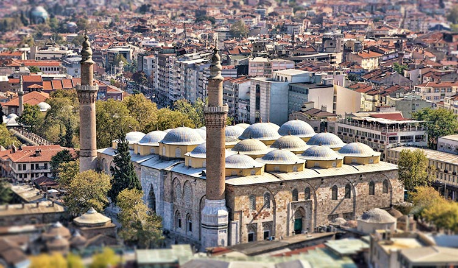

Bursa Ulu Cami, Bursa’da I. Bayezid tarafından 1396-1400 yılları arasında yaptırılmış ulu camidir.
Bursa’nın tarihi sembollerinden olan cami, Bursa kent merkezinde, Atatürk Caddesi üzerindedir. Çok ayaklı cami şemasının en klasik ve anıtsal örneği sayılır. Yirmi kubbeli yapı, Türkiye’deki iç cemaat yeri en geniş camidir. Mimarın Ali Neccar veya Hacı İvaz olduğu sanılmaktadır. Caminin kündekari tekniği ile yapılmış minberi Selçuklu oyma sanatından Osmanlı ahşap oymacılığı sanatına geçişin en önemli örneklerinden biri kabul edilen değerli bir sanat eseridir.
Caminin duvarlarında bulunan 19. yüzyılın ikinci yarısında ve 20. yüzyılın başlarında farklı hattatlar tarafından yazılmış 192 adet hat levhası ve duvar yazısı, hat sanatının özgün örnekleri arasında gösterilir.
Caminin iç mekanında, tepesi açık bir kubbenin altında bulunan şadırvan, Ulu Cami’nin dikkat çekici özelliklerindendir.
